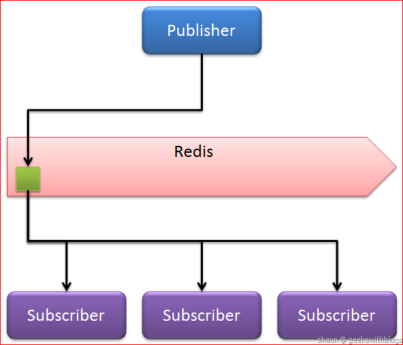

The Remote Dictionary Server
What is Redis?
- Likely the fastest NoSql database in the world.
- Allows for processing of a extraordinary amount of data.
- From Google:
Redis is an in-memory but persistent on disk database, so it represents a different trade off where very high write and read speed is achieved with the limitation of data sets that can't be larger than memory.
- Redis is an in-memory cache store ... but what does that mean?
Caches in ten seconds
127.0.0.1:6379> SET nightly-job-finished 6:00AM
OK
127.0.0.1:6379> GET nightly-job-finished
"6:00AM"
More Redis-Specific Examples
127.0.0.1:6379> SET currentuser Max
OK
127.0.0.1:6379> GET currentuser
"Max"
127.0.0.1:6379> SET count 1
OK
127.0.0.1:6379> GET count
"1"
127.0.0.1:6379> INCR count
(integer) 2
127.0.0.1:6379> GET count
"2"
What is Redis?
Redis is an in-memory cache store.
- Created in 2009 by Salvatore Sanfillipo.
- Allows Key => Data Structure.
- Data in memory, but sent to disk periodically.
- Incredibly fast - easily 100K ops/sec on the right hardware.
- Open Source under BSD license.
- Referred to as the 'Swiss Army Knife' of cache stores.
Who's Using Redis?
- Github
- Snapchat
- StackOverflow
Data Structures In Redis
- String - plain text
- List - an ordered list of strings
- Hash - a collection of keys and values
- Set - a collection of unique strings
- Sorted Set - like a set, but each element has a rank
...but no nested data structures.
String
| KEY | => | VALUE |
|---|---|---|
| nightly-job-finished | => | 6:00AM |
List
| KEY | => | VALUE | |||
|---|---|---|---|---|---|
| jobs-to-complete | => |
|
Hash
| KEY | => | VALUE | ||||
|---|---|---|---|---|---|---|
| patient-data | => |
|
Set
| KEY | => | VALUE | |||
|---|---|---|---|---|---|
| high-risk-patients | => |
|
Sorted Set
| KEY | => | VALUE | |||
|---|---|---|---|---|---|
| reddit-upvotes | => |
|
Other Uses
- Redis has a Publish / Subscribe mechanism - can synchronize many servers or webapps 
- Can set an expiration date on keys if the data is prone to change.
So how should I use it?
Redis is like lego for data. Yes, you can just store data in it. But the real power comes when you think of it as a toolset, where you can build exactly the right tool to do the job.
Thinking about how to efficiently model your problem is the hard part.
Let's look at some examples.
Caching a Database Call
This is the most common pattern for regular cache stores.
- Ask the cache if it has the data, return it if so.
- If it does not, query the database for the data.
- Save the data to the cache.
- Return the data requested.
While Redis is perfectly suited to be used this way, it doesn't really tap into the real power that Redis has.
Fast Object Store
Shopping Cart
Normally, a SQL database can be used to store any set of data, including object representation. This is not a bad strategy, it merely becomes too slow as the application starts to exponentially increase the number of requests. Once the table gets big enough, each person's experience slows down to the point where they probably don't feel like waiting around.
How can we keep it fast, other than starting to horizontally scale the database?
Fast Object Store
Shopping Cart
Use Hash to store the cart data. Incrementing product counts can be done with HINCRBY, fetching of all products can be achieved with HMGET, and the performance stays the same no matter how many objects are present.
Leaderboards
A very common use case. Since redis allows to collect large numbers of ids into a set with a score associated, it becomes possible to rank users, comments, tweets, or pretty much anything by any count of metric or statistic you want.
- Use ZADD when a new item needs to be added.
- Use ZINCRBY to increment the score of an element when someone 'does something'.
- Use ZRANGE or ZREVRANGE (or ZRANGEBYRANK, ZRANGEBYSCORE, ZREVRANGEBYRANK, or ZREVRANGEBYSCORE) to get elements with the highest score (or the lowest).
Relationships
For a set of users, lets record who the users are friends with. If we create a set with all of user 1's friends, and the same for user 2, Redis lets us do some pretty cool things right out of the box.
- SCARD user:1:friends => How many friends does user 1 have?
- SINTER user:1:friends user:2:friends => Common Friends
- SDIFF user:1:friends user:2:friends => Unique Friends
- SUNION user:1:friends user:2:friends => ALL THE FRIENDS
Patient Search
- Store all the patient data in a hash: personID => { data object represented as a string}
- For each patient, find all prefixes that would match the patient's name and create sets where each key is the prefix. Then, add the id of that patient to those sets.
- When a user logs in, create ONE additional set for that user that contains all the patients they are allowed to see.
- When that user types in a search term, split up all the terms as if they are prefixes.
- Find the sets associated with the prefixes, and take the intersection of all of them, including the set containing the patients the user can access.
- At this point we have a list of ids that match both the search term and the patients the user can see. Just call an HMGET on the Hash with the patient data for those ids to get the attributes.
A Note About Persistence
Redis DOES persist to the disk by default. So if you're worried about your data being lost permanently, have no fear.
Redis has two mechanisms - the more popular today being that Redis compresses it's contents and writes them to a flat RDB file, which is loaded next time Redis needs it (usually on startup).
Redis needs to fork to do this though - which generates overhead.
About Replication
Redis more recently added the ability to work in clusters. With this, one can set up a group of Redis instances, all on different CPU's, that can talk to each other and coordinate data.
Since Redis only propagates downstream, you need to remember that things that need to be globally consistent should only be written to the top level, or master, Redis node.
...but - if you can take advantage of the fact that a given user will always be routed to the same Redis instance, then you can effectively split the data load among your Redis instances evenly.
How others have used Redis:
- The Architecture Twitter Uses To Deal With 150M Active Users, 300K QPS, A 22 MB/S Firehose, And Send Tweets In Under 5 Seconds
- Storing hundreds of millions of simple key-value pairs in Redis
- The Instagram Architecture Facebook Bought For A Cool Billion Dollars
- How We Made Github Fast
- Using Redis as a Secondary Index for MySQL
- Highly Available Real Time Push Notifications and You
But Wait! There's a ton we didn't cover!
You can find all the information you need at redis.io. Aside from that, there are hundreds of articles written by people who have added Redis to their stack with great success. Go exploring!